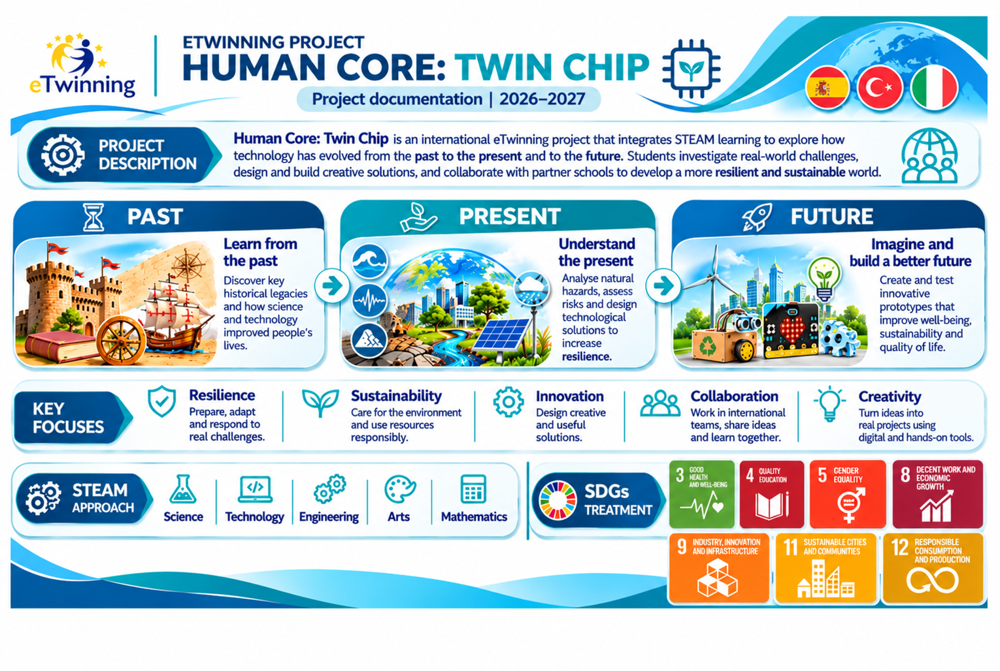

Integración del proyecto Human Core: Twin Chip en el currículum de Ed. Primaria
INTEGRACIÓN CURRICULAR
Textos extraídos de la Orden EFP/678/2022, de 15 de julio, por la que se establece el currículo y se regula la ordenación de la Educación Primaria en el ámbito de gestión del Ministerio de Educación y Formación Profesional.

Lucía Villar creado con herramienta de IA para el proyecto Human Core:Twin Chip. Infografía(CC BY-SA)